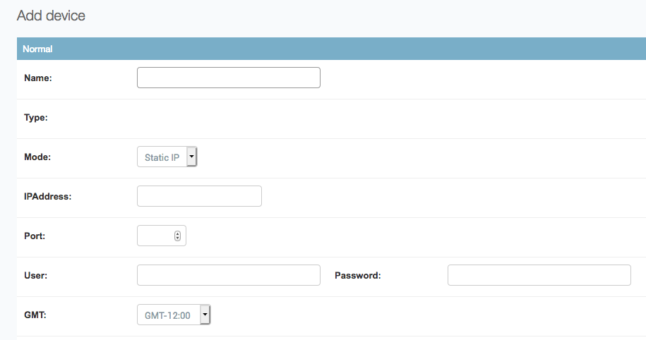
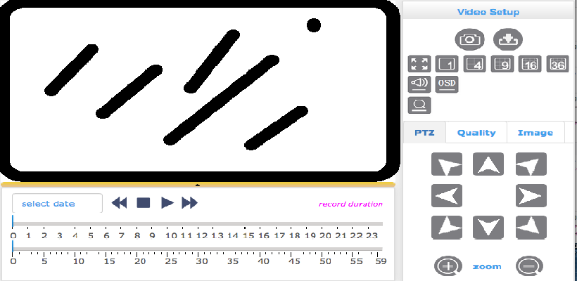

This is the overview of the dashboard.
It provides the users to control the devices and users account. And customers can check their billing and users log in the panel bar too. System option will show the server's state like CPU & memory usage. Each option has its permissions so only administrators can check sensitive data like billing and system information.
For instance, if a manager wants to add new device, he can press device option and the above screen will be shown. Editors can assign name and IP address to the device. It's more convenient for configuration
Customers can control IP cameras remotely, taking screen shots, download videos panning cameras and starting recording function.